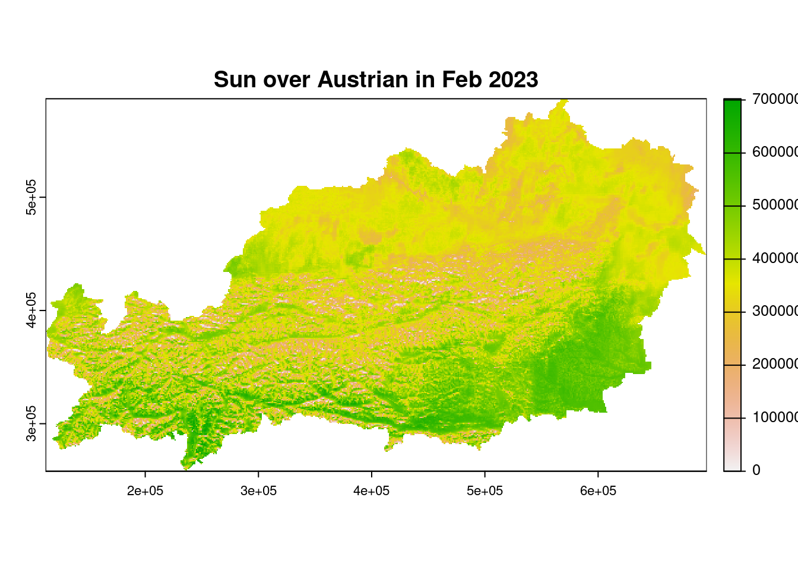
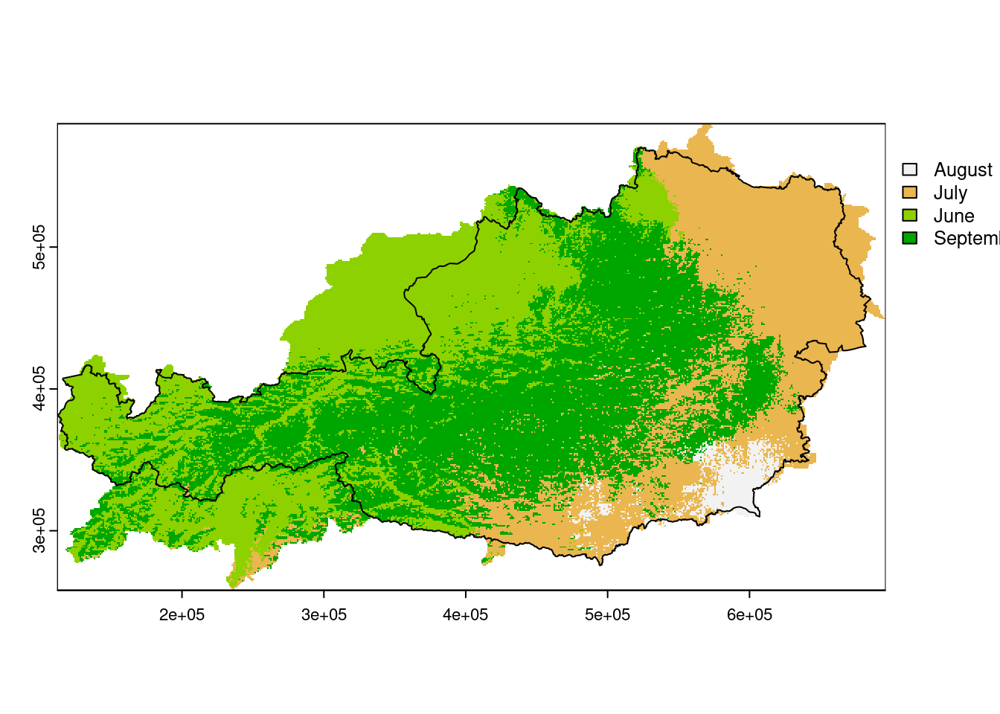
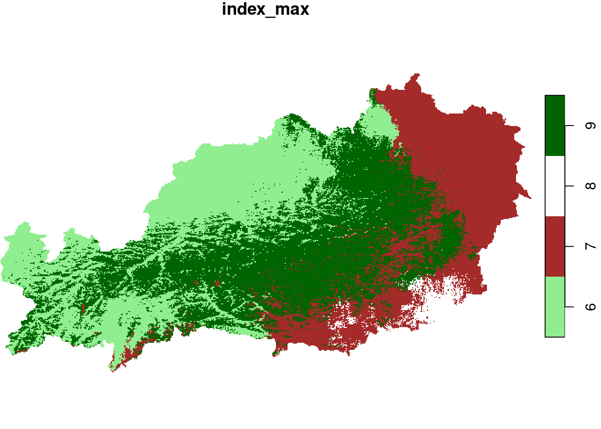

Code
library(tidyverse)
library(here)
library(glue)
library(sf)
library(stars)
library(terra)
library(rajudas)
library(jsonlite)library(tidyverse)
library(here)
library(glue)
library(sf)
library(stars)
library(terra)
library(rajudas)
library(jsonlite)Loading packages
For learning purposes I downloaded data on the sun duration from the **CMSAF for europe in 2020 to October 2023*. The data can be found after login here. It’s the SARAH-3 product. It’s one NetCDF per Month. So it could also just be a tif.
dir_data_europe = here("data_raw/raster/sun_europe")
files_to_data_europe = dir(dir_data_europe, ".*\\.nc$", full.names = T)Also, in order to see how things are working with a NetCDF with many timestamps, I include a raster for Austria for the sum of Sun Duration. It is one single NetCDF for 2023, but includes all the months up to October for 2023.
dir_data_austria = here("data_raw/raster/sun_austria")
file_to_data_austria = dir(dir_data_austria, ".*\\.nc$", full.names = T)The outline of Austria
au = rajudas::oeSpatRaster-classFrom the docs:
A SpatRaster represents multi-layer (variable) raster data. A SpatRaster object stores a number of fundamental parameters that describe it. These include the number of columns and rows, the coordinates of its spatial extent (‘bounding box’), and the coordinate reference system (the ‘map projection’). In addition, a SpatRaster can store information about the file(s) in which the raster cell values are stored (if there are such files) — as raster cell values can also be held in memory.
Lets use the data on monthly Sun duration over Austria
raster_austria_terra = terra::rast(file_to_data_austria)# does it have values
hasValues(raster_austria_terra)[1] TRUE# what is the resolution
res(raster_austria_terra)[1] 1000 1000# the dimensions
dim(raster_austria_terra)[1] 329 584 11# the number of layers
terra::nlyr(raster_austria_terra)[1] 11## extract one layer (one month - Feb)
feb = raster_austria_terra[[2]]
plot(feb, main = "Sun over Austrian in Feb 2023")
When reading a netcdf you often end up with many layers (which you can check with the nlyr-function)
There are several options of summarising data over the layers. They always return a SpatRaster-Object. Meaning the output will have the same dimension and resolution as any of the layer, but will be just a single layer!
# mean 1: the normal mean-function
m1 = terra::mean(raster_austria_terra)
# the terra app-function
m2 = terra::app(raster_austria_terra, "mean")
terra::all.equal(m1, m2)[1] TRUEr = rast("au.tif")
when_max_sun = terra::app(r, which.max)
values(when_max_sun) = month.name[values(when_max_sun)]
plot(when_max_sun)
plot(oe, add = T)
raster_austria_stars = stars::read_ncdf(file_to_data_austria)no 'var' specified, using SAother available variables:
lambert_conformal_conic, lat, lon, time, x, yWill return stars object with 2113496 cells.Warning in getGeoDatum(gm): Didn't find a longitude of prime meridian for
datum, assuming 0.Warning in getGeoDatum(gm): Didn't find a semi major axis for datum, assuming
WGS84 6378137.0 metersWarning in getGeoDatum(gm): Didn't find an inverse flattening value, assuming
WGS84 298.257223563index_max = function(x) ifelse(all(is.na(x)), NA, which.max(x))
when_max_sun_stars = st_apply(raster_austria_stars, c("x", "y"), index_max)
plot(when_max_sun_stars, col = c("lightgreen", "brown", "white", "darkgreen"))
plot(oe %>% st_transform(st_crs(when_max_sun_stars)), add = T)